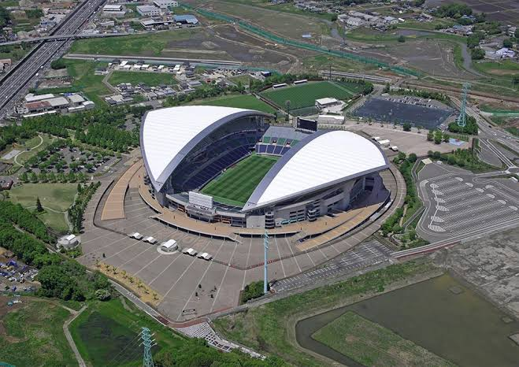
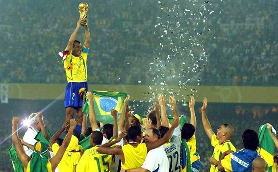

Quando a Copa do Mundo de 2002 foi realizada, o mundo vivia uma transição para o século XXI marcada pela
liderança global dos Estados Unidos, pela Guerra ao Terror, pela expansão da globalização e pelo avanço
acelerado das tecnologias digitais. Ao mesmo tempo, a ascensão econômica da Ásia tornava-se cada vez
mais evidente, fato simbolizado pela escolha conjunta de Coreia do Sul e Japão como sedes do maior
evento esportivo do planeta. Esse contexto ajuda a compreender por que a Copa de 2002 representou não
apenas uma competição esportiva, mas também uma vitrine do novo equilíbrio econômico e geopolítico
mundial.
Coréia do Sul e Japão, apesar de trajetórias históricas distintas, compartilham características
importantes: economias avançadas, forte inserção no comércio internacional e interesse em ampliar sua
projeção global. O evento marcou a primeira Copa realizada na Ásia e a primeira organizada conjuntamente
por dois países, simbolizando o crescente protagonismo econômico e político da região no início do
século XXI.
A Copa do Mundo de 2002 exigiu investimentos significativos da Coreia do Sul e do Japão, principalmente
em infraestrutura esportiva, transporte e modernização urbana. Estima-se que os investimentos totais
tenham ultrapassado US$ 7 bilhões.


Grande parte dos recursos foi destinada à construção e reforma de estádios. A Coreia do Sul construiu ou
modernizou dez arenas, enquanto o Japão realizou melhorias em diversos estádios e ampliou sua
infraestrutura de transporte. Também foram realizados investimentos em aeroportos, rodovias, sistemas
ferroviários de alta velocidade, telecomunicações e serviços turísticos.
Embora alguns estádios tenham apresentado dificuldades de utilização após o torneio, a Copa de 2002 é
geralmente considerada um caso de legado relativamente positivo quando comparada a outras edições. Isso
ocorreu porque os dois países já possuíam economias desenvolvidas e uma infraestrutura urbana avançada,
reduzindo a necessidade de obras excessivas ou de baixa utilização posterior.
De forma geral, o maior legado da Copa de 2002 foi a projeção internacional da Ásia como centro
econômico e tecnológico do século XXI, demonstrando que grandes eventos globais poderiam ser organizados
com sucesso fora dos tradicionais centros europeus e americanos.
A final foi disputada no International Stadium Yokohama (atualmente conhecido como Nissan Stadium) e
teve um público de quase 70 mil espectadores. A seleção do Brasil foi a campeã dessa edição vencendo a
seleção da Alemanha por 2 a 0.